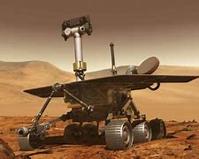
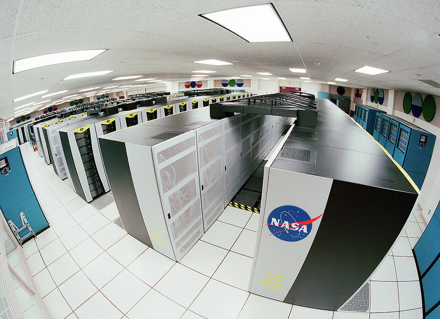

Caltech designs both the Opportunity and Spirit Mars Rovers. Both landed in 2004 and ran 20 times longer than their planned lifetime of 90 days. While Spirit ceased to move in 2009 and communications from the rover stopped in 2010, Opportunity far exceeded its expected lifetime.
Named in honor of the space shuttle which broke-up on re-entry, the Columbia supercomputer is an important part of NASA's return to manned spaceflight after the 2003 disaster. Columbia was used in space vehicle analysis, including studying the Columbia disaster, but also in astrophysics, weather and ocean modeling. At its introduction, it was listed as the second fastest supercomputer in the world and this single system increased NASA's supercomputing capacity 10-fold. The system was kept at NASA Ames Research Center until 2013, when it was removed to make way for two new supercomputers.
